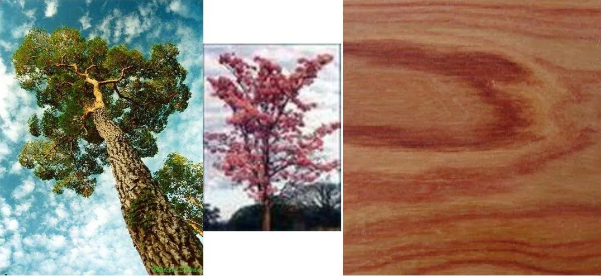

Módulo 03 · 25 minutos
Dónde vive el aroma: un mapa de la planta
Al terminar, vas a poder vincular aceites conocidos con la parte vegetal de origen y leer un nombre con mayor precisión.
Un árbol, tres frascos
Frente a un naranjo alguien reúne tres frascos. El primero nació de las flores. El segundo, de hojas y ramitas jóvenes. El tercero, de la cáscara del fruto. Comparten árbol, pero no identidad: se conocen como nerolí, petit grain y esencia de naranja.
La planta es una casa con muchas habitaciones. El aroma cambia según cuál abrimos.
Recorrer la planta de arriba hacia abajo
Flor
Lavanda, jazmín y rosa. En el naranjo, las flores dan .
Hoja y parte aérea
Citronela y numerosas plantas aromáticas concentran su interés en las hojas. En eucalipto puede considerarse una porción amplia del árbol.
Madera
El sándalo conduce el recorrido hacia los tejidos leñosos.
Raíz
El vetiver obliga a mirar bajo tierra.
Resina
Incienso, mirra y benjuí se relacionan con sustancias que la planta puede .
Cáscara
Limón, naranja y bergamota guardan su esencia en la parte externa del fruto.
La parte elegida determina qué se cosecha, cuánto material se necesita y qué procedimiento será adecuado. No es lo mismo reunir flores delicadas que cortar madera, lavar raíces o trabajar una cáscara fresca. Antes de hablar de extracción hay que identificar el tejido que contiene el aroma.
El caso del naranjo
- Nerolí: procede de las flores.
- Petit grain: se vincula con hojas, ramitas y pequeños frutos en formación.
- Esencia de naranja: procede de la cáscara del fruto.
conserva en su nombre la idea de «pequeño grano». El ejemplo demuestra que el nombre común de la planta no basta: origen botánico y parte utilizada completan la identidad.

Observación guiada
Recorré la imagen en tres escalas: árbol completo, flor y madera. ¿Qué información se perdería si el frasco dijera solamente «palo rosa»? La fotografía anticipa una pregunta que acompañará todo el curso: qué parte fue utilizada.
El nombre botánico reduce la confusión
Los nombres comunes cambian entre regiones y pueden señalar especies distintas. El nombre botánico funciona como referencia más precisa. Palo rosa, por ejemplo, aparece como Aniba rosaeodora. El género comienza con mayúscula, la especie con minúscula y ambos se escriben en cursiva.
No se trata de memorizar latín. Se trata de evitar que dos materiales diferentes entren al mismo proceso bajo un nombre ambiguo. En cosmética natural, una etiqueta útil debería permitir reconocer al menos el nombre botánico y la parte vegetal empleada.
Actividad · Armá tres rutas
Completá cada recorrido:
- Vetiver → parte recolectada → raíz.
- Bergamota → parte recolectada → cáscara.
- Sándalo → parte recolectada → madera.
Elegí uno y escribí una consecuencia práctica. Trabajar raíces exige retirar material del suelo; trabajar cáscaras vincula la obtención con el fruto; trabajar madera obliga a considerar el crecimiento y la disponibilidad del árbol.
Del mapa a la piel hay un límite
Ya encontramos el aroma, pero el frasco concentra lo que antes estaba disperso en numerosos tejidos. Esa concentración cambia las reglas: reconocer un aceite no significa que pueda usarse directamente. Antes de imaginar una crema, necesitamos aprender a poner distancia entre la gota y la piel.
Guardá esta estación
Cuando puedas explicar la idea central con tus propias palabras, marcá el módulo como completado.